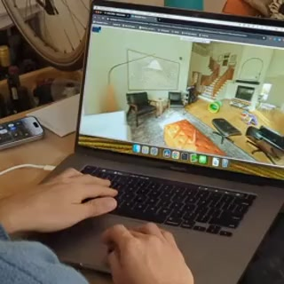

|
Vinayak Verma I'm a 3rd year Electrical and Electronic Engineering student at University of Auckland. Courses I have enrolled into are focused on electronics, controls systems and firmware. Previously worked with Asbuilt Digital on machine learning & computer vision techniques to understand the causal of IoT anomaly detections. |
Awards and Certification |
|
Gold Medal - French Olympiad 2014
Elementary school level. New Delhi, India. |
|
Physics Scholarship - NCEA Level 3
Northcote College, New Zealand |
|
Deep Learning - Certification
Andrew Ng - deeplearning.ai |
ProjectsI'm interested in robotics. Specifically, locomotion, deep learning and artificial general intelligence (AGI). Most of my projects are on deep learning, electronics and embedded systems. Some of these are highlighted. |

|
Nuvo: Neural UV Mapping for Unruly 3D Representations
Pratul Srinivasan, Stephan J. Garbin, Dor Verbin, Jonathan T. Barron, Ben Mildenhall ECCV, 2024 project page / video / arXiv Neural fields let you recover editable UV mappings for the challenging geometries produced by NeRF-like models. |

|
CAT3D: Create Anything in 3D with Multi-View Diffusion Models
Ruiqi Gao*, Aleksander Holynski*, Philipp Henzler, Arthur Brussee, Ricardo Martin Brualla, Pratul P. Srinivasan, Jonathan T. Barron, Ben Poole* arXiv, 2024 project page / arXiv A single model built around diffusion and NeRF that does text-to-3D, image-to-3D, and few-view reconstruction, trains in 1 minute, and renders at 60FPS in a browser. |

|
Binary Opacity Grids: Capturing Fine Geometric Detail for Mesh-Based View
Synthesis
Christian Reiser, Stephan J. Garbin, Pratul Srinivasan, Dor Verbin, Richard Szeliski, Ben Mildenhall, Jonathan T. Barron, Peter Hedman*, Andreas Geiger* SIGGRAPH, 2024 project page / video / arXiv Applying anti-aliasing to a discrete opacity grid lets you render a hard representation into a soft image, and this enables highly-detailed mesh recovery. |
|

|
SMERF: Streamable Memory Efficient Radiance Fields for Real-Time
Large-Scene Exploration
Daniel Duckworth*, Peter Hedman*, Christian Reiser, Peter Zhizhin, Jean-François Thibert, Mario Lučić, Richard Szeliski, Jonathan T. Barron SIGGRAPH, 2024 (Honorable Mention) project page / video / arXiv Distilling a Zip-NeRF into a tiled set of MERFs lets you fly through radiance fields on laptops and smartphones at 60 FPS. |
Miscellaneous |


{kind=link}
|
Feel free to steal this website's source code. Do not scrape the HTML from this page itself, as it includes analytics tags that you do not want on your own website — use the github code instead. Also, consider using Leonid Keselman's Jekyll fork of this page. |